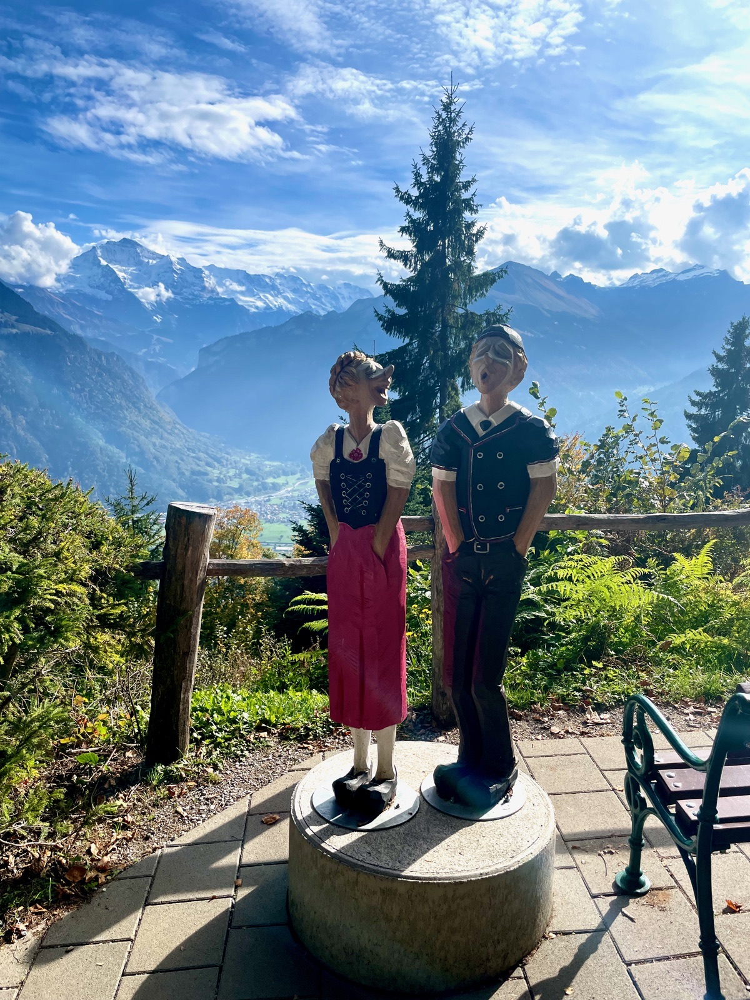
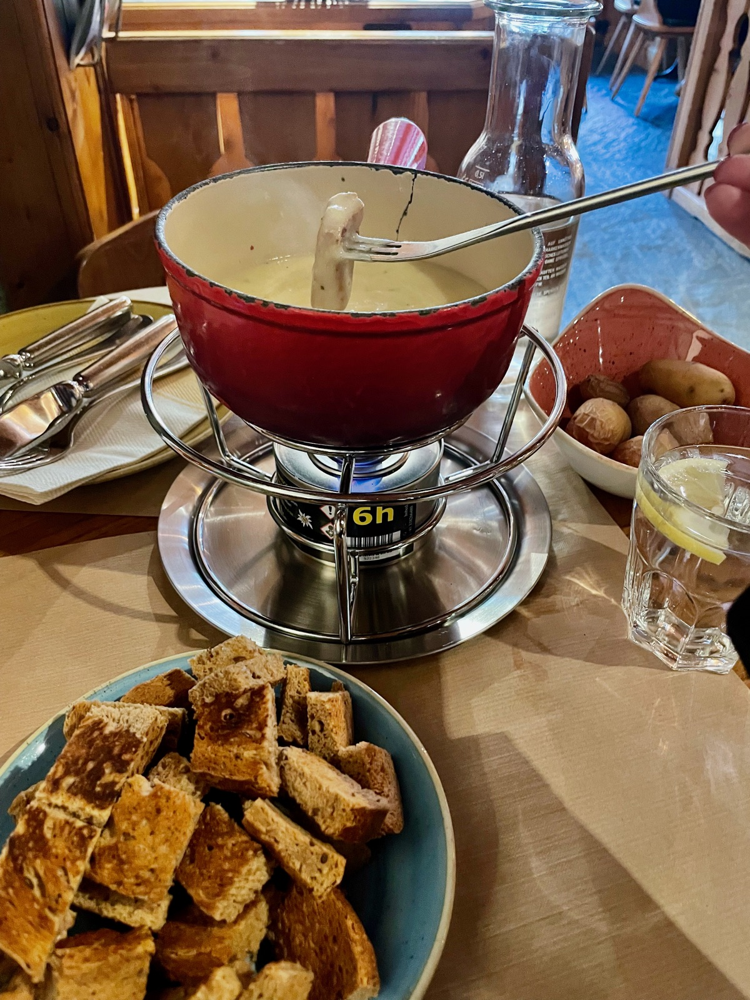
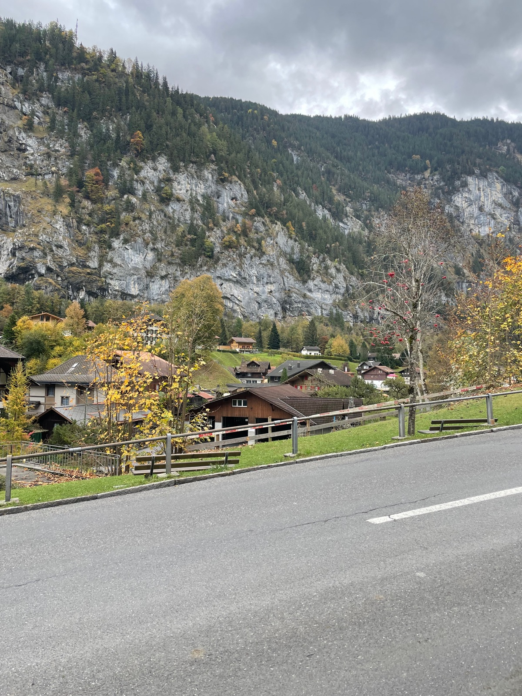
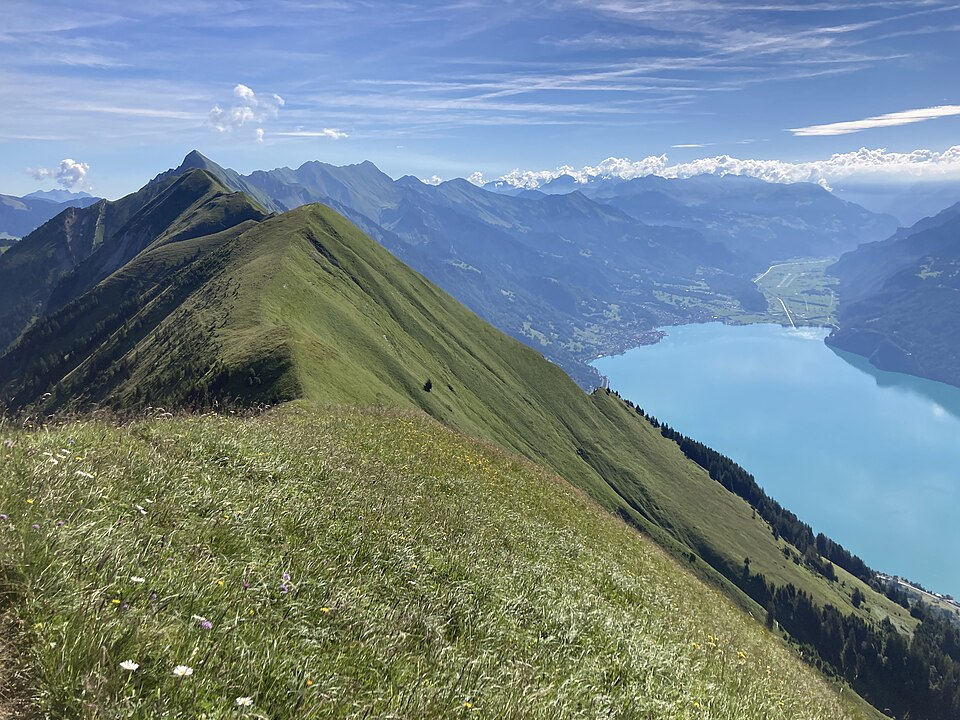
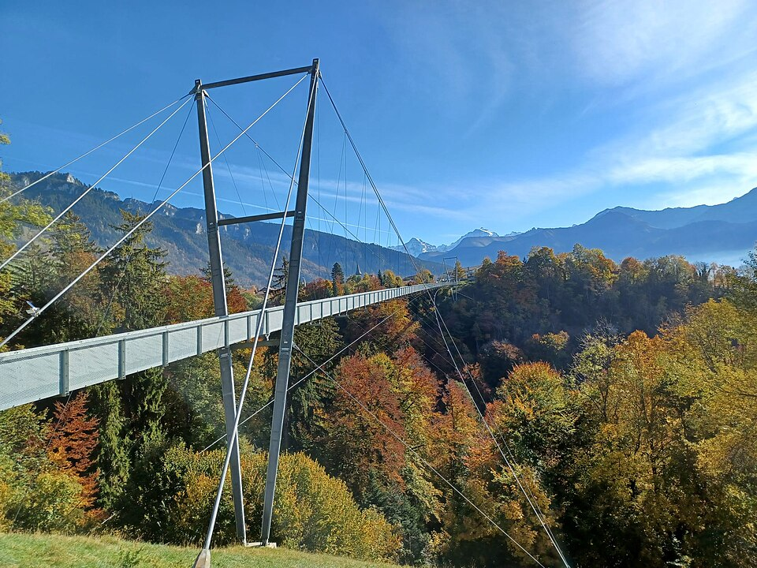

The Two Lakes Bridge viewpoint at 1,322m with panoramic views over Interlaken, Lake Thun, and Lake Brienz. Reached by the Harderbahn funicular.
Above Interlaken
Went here

Grindelwald
Alpine Village
Charming alpine village at the base of the Eiger. A gateway to the Jungfrau region with stunning mountain scenery, hiking trails, and traditional Swiss atmosphere.
30 min by train from Interlaken Ost
Went here

Lauterbrunnen
Valley
The Valley of 72 Waterfalls — a dramatic U-shaped glacial valley with towering cliffs and cascading falls. Said to have inspired Tolkien’s Rivendell.
20 min by train from Interlaken Ost
Went here

Hardergrat
Ridge Trail
Dramatic ridge hiking trail above Interlaken with exposed sections and sweeping views of both lakes. For experienced hikers only — not for those with vertigo.
Above Interlaken
Traveler recommended

Panorama Bridge Sigriswil
Suspension Bridge
A 340m pedestrian suspension bridge spanning a gorge with views of Lake Thun and the Bernese Alps. Free to cross.
Sigriswil, north shore of Lake Thun
Traveler recommended

Things to Do
Harderbahn Funicular
Paid
10-minute funicular ascent to 1,322m for panoramic views from the Two Lakes Bridge. One of Interlaken’s most iconic experiences.
Helicopter skydive over the Swiss Alps. Interlaken is one of the most popular skydiving destinations in Europe, with views of the Eiger, Mönch, and Jungfrau.
Interlaken
Getting Around
Trains
Interlaken West and Ost stations connect to the Jungfrau region, Bern, and beyond. Hub for scenic mountain railways.
Lake Boats
Ferry services on Lake Thun and Lake Brienz. Included in the Jungfrau Travel Pass.
Cable Cars
Harder Kulm funicular, Niederhorn cable car, and connections to the wider mountain transport network.
Walking
Town center is compact and walkable between the two train stations. Most restaurants and shops are along Höheweg.
Transit Tip
The Jungfrau Travel Pass covers trains, boats, funiculars, and cable cars for 3–10 days — essential for exploring the region. It pays for itself in 2–3 mountain excursions.
Frequently Asked Questions
Interlaken scores 6/10 for celiac safety (Moderate). While dedicated GF restaurants are rare, several places offer GF menu options including pizza, pasta, and bread. Coop and Migros supermarkets in town center carry GF products. Mountain huts often serve naturally GF dishes like rösti and fondue.
Little Thai is the standout for GF dining - the pad see ew is GF and exceptional. Sapori offers GF pizza, pasta, and bread with no extra charge. Appaloosa Saloon in Spiez has GF clearly marked on the menu with GF bread available. El Azteca has GF options but they are not marked on the menu.
Yes. Both Coop and Migros in Interlaken's town center carry GF products. Switzerland's major supermarket chains generally have good GF selections including bread, pasta, and snacks.
Travel Tips
Little Thai is the GF standout — book ahead, it’s extremely popular with both locals and tourists.
Mountain huts serve naturally GF rösti and cheese dishes — a safe bet when restaurant options are limited at altitude.
Weather changes rapidly at altitude — always carry layers even on sunny days. A clear morning can turn to rain by afternoon.
The Jungfrau Travel Pass pays for itself in 2–3 mountain excursions. Get it for the full duration of your stay.
Paragliding is Interlaken’s signature activity — you’ll see colorful canopies floating down from the main Höheweg promenade all day.
Have a tip or comment?
Found a great GF spot in Interlaken? I'd love to hear from you.